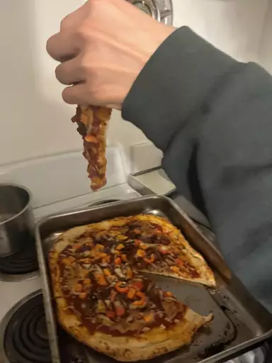

Pizza Recipe

Description
In this section we will learn about how to make an easy homemade pizza when you don't have a lot of time. You just mix the ingredients and rest for 5 minutes until it is cooking!
Ingredients
- Yeast
- Sugar
- Bread Flour
- Olive Oil
- Salt
Steps
- Let the Dough come to room temperature
- Prepare your surface with oil
- Shape the dough
- Gather all ingredients. Preheat oven to 450 degrees F(230 degrees C) and lightly grease a pizza pan
- Place warm water in a bowl; add yeast and sugar. Mix and let stand until creamy, about 10 minutes.
- Add flour, oil, and salt to the yeast mixture; beat until smooth. You can do this by hand or use a stand mixer fitted with a dough hook to make it easier.
- Let rest for 5 minutes.
- Turn dough out onto a lightly floured surface and pat or roll into a 12-inch circle.
- Transfer to the prepared pizza pan.
- Spread crust with sauce and toppings of your choice.
- Bake in the preheated oven until golden brown, 15 to 20 minutes. Remove from the oven and let cool for 5 minutes before serving.
Home